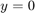
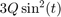
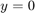
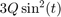
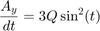
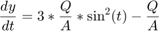
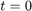
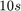
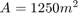
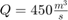

Connor McGarty, cmcgarty - HW01: P1.9 from Chapra Text
File: cmcgarty_EE254_HW01_P1_9.m
Submission Date: Tuesday, January 28, 2020 - 1/29/20
Problem, P1.9: A storage tank contains a liquid at depth  where  when the tank is half full. Liquid is withdrawn at a constant flow rate to meet demands. The contents are resupplied at a sinusoidal rate . Equation (1.14) can be written for this system as:
where  when the tank is half full. Liquid is withdrawn at a constant flow rate to meet demands. The contents are resupplied at a sinusoidal rate . Equation (1.14) can be written for this system as:

or,
change in volume = inflow - outflow
Or, since the surface area A is constant:

Use Euler's method to solve for the depth from  to  with a step size of 0.5 s. The parameter values are  and  . Assume that the initial condition is y = 0.
Contents
Solution
clear;clc; % Inital conditions half_full = 0; % m surface_area = 1250; % m^2, variable A outflow_rate = 450; % m^3/d, variable Q % set time conditions t_start = 0; % s t_stop = 10; % s t_current = t_start; t_previous = t_current; t_delta = 0.5; % s t_vector = []; % s t_vector(1) = t_start; y_init = 0; % m y_vector = []; % m y_vector(1) = y_init; y_current = y_init; y_previous = y_current; iterator = 1; done = false; % loop flag while (done == false) iterator = iterator + 1; slope = 3 .* (outflow_rate ./ surface_area) .* sin(t_previous).^2 ... - (outflow_rate ./ surface_area); y_current = y_previous + slope * t_delta; t_current = t_current + t_delta; if t_current >= t_stop done = true; end y_vector(iterator) = y_current; t_vector(iterator) = t_current; t_previous = t_current; t_current = t_current + t_delta; end plot(t_vector, y_vector); axis([0, 10, -.5, .5]); xlabel('Time (s)'); ylabel('Depth from half-fill line, y = 0 (m)');